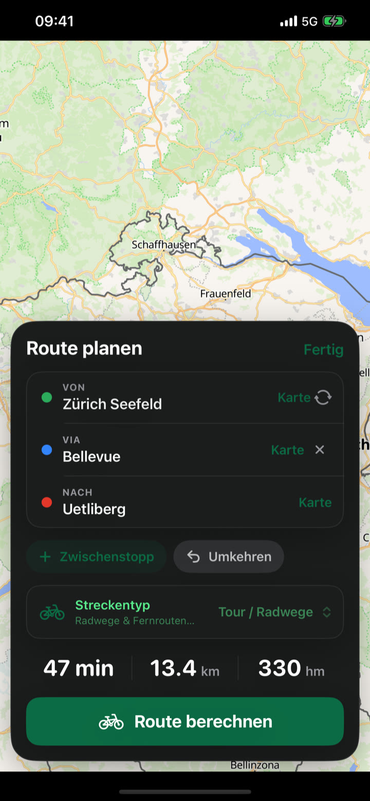
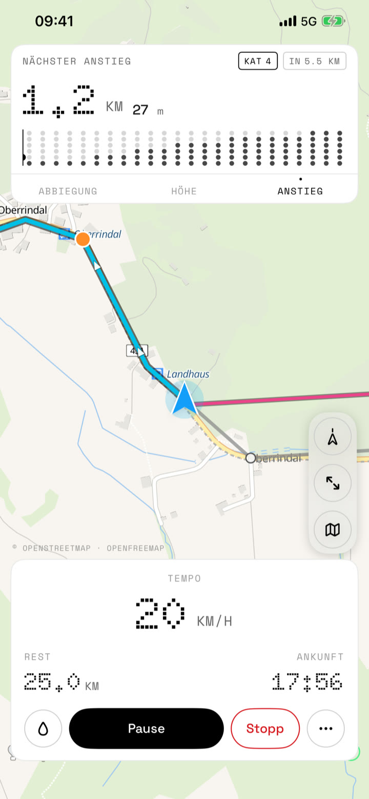
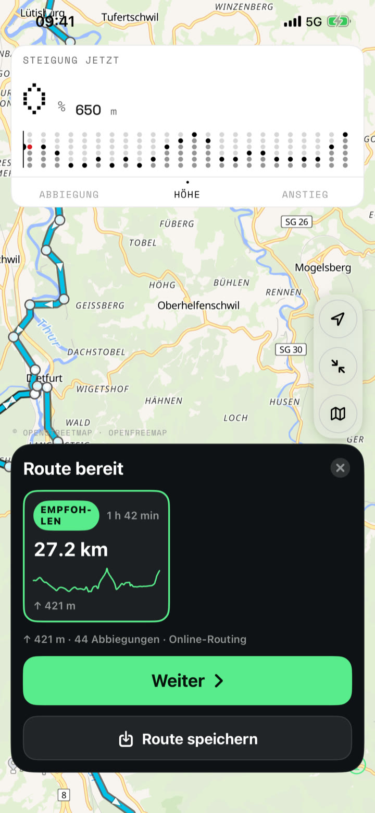

Route planen
- Start, Ziel und Zwischenziele per Adresse oder Nadel auf der Karte
- Profile für Tour/Radwege, Gravel, Rennrad und weitere
- Alternativen A/B/C mit Distanz, Höhenmetern und Fahrzeit
Turn-by-Turn fürs Rad
Fahrrad-Navigation, die du am Lenker lesen kannst: grosse Abbiegungen, klare Zahlen, dunkles Display. Plane eine Tour, lade ein GPX oder nimm eine Radroute in der Nähe – dann folgen, nicht scrollen.



Screenshots
Vom ersten Start bis zum nächsten Anstieg – so sieht CycleLine auf dem iPhone aus.



Funktionen
Für Gravel, Trekking und Rennrad – für alle, die keine Social-App wollen, sondern eine Navi, die den Weg sagt.
Neue Routen planen, Alternativen und Neuberechnung brauchen Internet. Karten und Daten: OpenStreetMap, OpenFreeMap, MapLibre, BRouter, Open-Meteo, Overpass. CycleLine ersetzt keine Verkehrsschilder und keine eigene Aufmerksamkeit im Strassenverkehr.
CycleLine ist kostenlos im App Store – für iPhone, ohne Konto und ohne Werbung. Fragen oder Feedback? info@isupport.ch